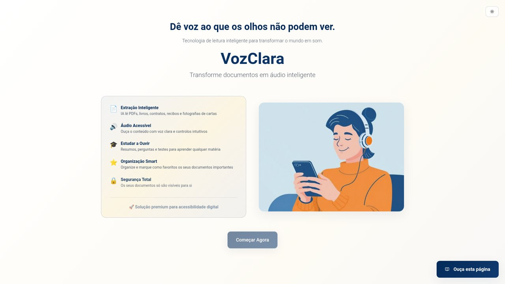
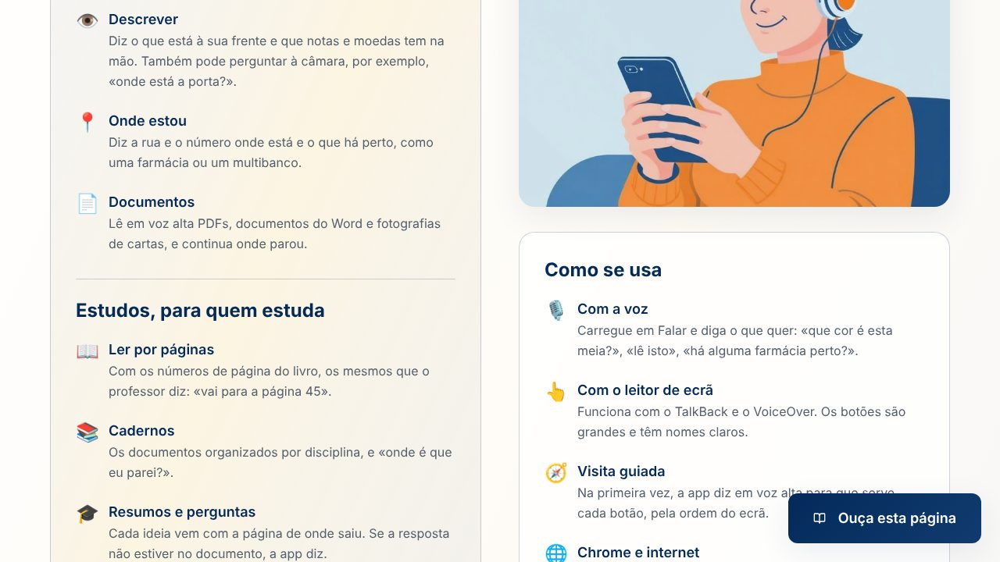
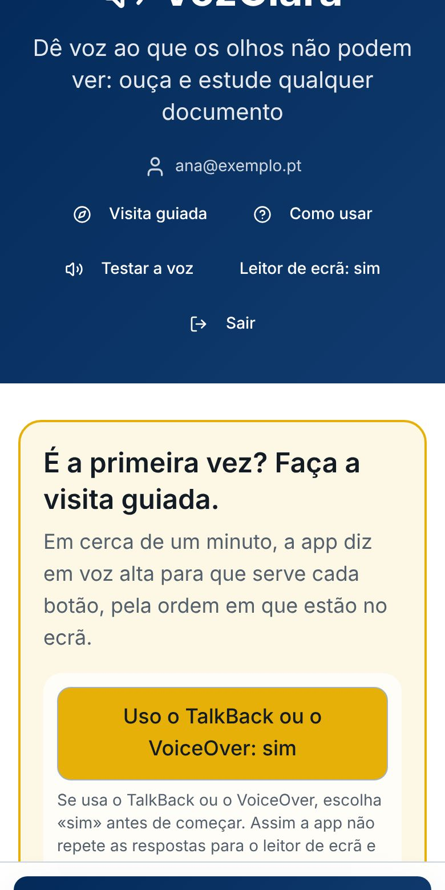
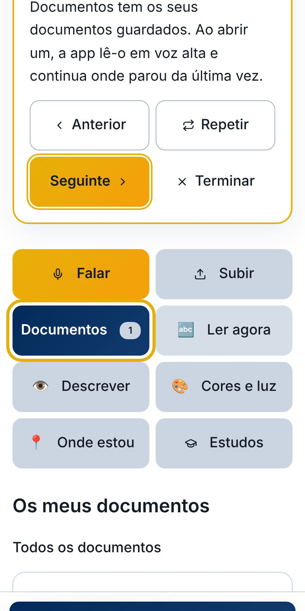
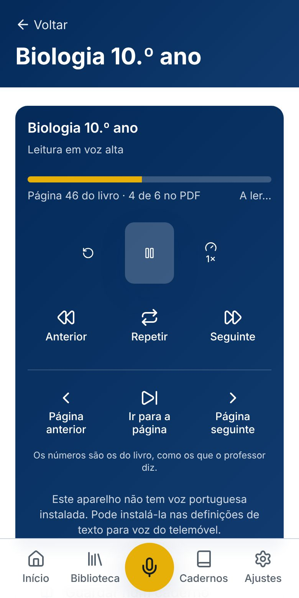
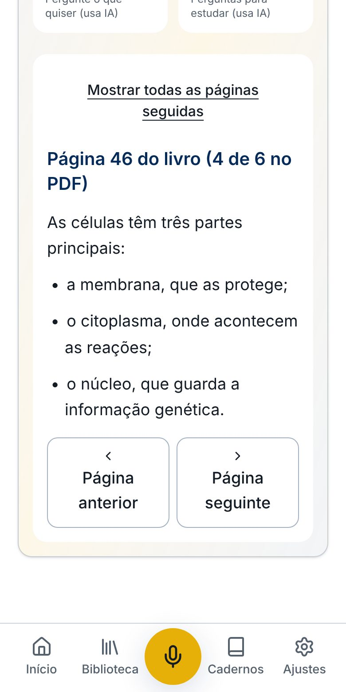
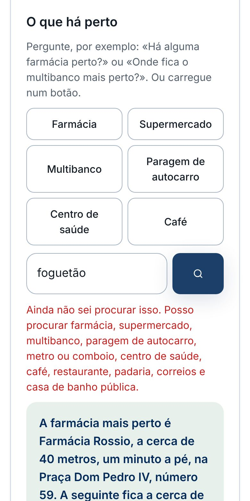

O problema
Pequenas tarefas que ainda dependem de outra pessoa
A irmã da Lenira é cega. Para saber de que cor são as meias do bebé, se uma carta é uma conta para pagar ou em que rua está, precisa muitas vezes de alguém por perto. Há apps para isto, mas quase todas estão em inglês ou em português do Brasil, pedem várias instalações ou tornam-se complicadas para quem não tem à vontade com tecnologia.
O objetivo da VozClara é uma app só, em português de Portugal, que se usa com a voz ou com poucos botões grandes, fala com calma e funciona num telemóvel Android comum.
«O mais importante são as cores. A minha irmã fica sempre à espera de alguém por perto para saber a cor das coisas, das roupas do bebé, das meias.» — Lenira
O que faz
Duas áreas, para duas necessidades
A app chama-se Tato Digital. A VozClara fica simples para o dia a dia de quem só quer ouvir os seus papéis e saber o que tem à volta. Quem estuda tem uma área à parte, os Estudos.
VozClara · o dia a dia
Cores e luz
Diz a cor da peça que a pessoa segura ao centro da câmara, as várias cores de uma peça e onde estão, e se a luz está acesa.
«Que cor é esta meia?»
Ler agora
Lê cartas, embalagens, prazos de validade e ementas com a câmara. Primeiro no telemóvel, sem internet, e com a IA quando é preciso mais certeza.
«Lê isto para mim.»
Descrever e conversar com a câmara
Diz o que está à frente da câmara, com posições e possíveis perigos, e que notas e moedas a pessoa tem na mão. Com a câmara ligada, a pessoa faz perguntas e ouve a resposta com a voz de sempre; pode pedir para ser avisada quando aparece algo novo à frente.
«Onde está a porta?»
Onde estou e o que há perto
Diz a rua e o número mais próximos e permite partilhar a localização com a família. Também diz o que há perto, com a distância, os minutos a pé e a rua: farmácia, supermercado, multibanco, paragem de autocarro.
«Há alguma farmácia perto?»
Documentos
Abre PDFs, documentos do Word e fotografias de cartas, guarda-os e lê-os em voz alta, retomando onde parou. O texto aparece uma página de cada vez e acompanha a voz, para quem lê com o leitor de ecrã ou com os olhos.
«Continuar a ouvir.»
Botão Falar
Percebe pedidos ditos com as palavras de cada pessoa e faz logo a ação, sem ter de decorar comandos.
«Que horas são?»
Letra grande
Funciona com a letra grande do telemóvel e em modo escuro: os botões crescem, as grelhas passam a uma coluna e nenhuma palavra fica partida a meio. Testado com a letra até 200 %.
Visita guiada
Na primeira vez, a app diz em voz alta para que serve cada botão, pela ordem do ecrã, e destaca-o para quem vê pouco. Com o TalkBack, avança-se sempre no mesmo botão.
«Seguinte.»
Estudos · para quem estuda
Ler por páginas, com as páginas do livro
O professor diz «abram na página 45», mas o PDF conta as páginas de outra maneira. A app reconhece os números impressos no livro e vai diretamente à página certa.
«Vai para a página 45.»
Cadernos de estudo
Organiza os PDFs por disciplina, como Direito ou Biologia, com a percentagem já ouvida de cada um.
«Abrir o caderno de Direito.»
Onde é que eu parei?
Volta ao último documento e continua a ler do mesmo sítio.
«Onde é que eu parei?»
Resumos e perguntas com a página
Resume a matéria com as ideias principais, cada uma com a página onde está, responde a perguntas dizendo de que página vem a resposta e faz testes para rever. Se a resposta não estiver no documento, diz isso em vez de inventar.
«Segundo a página 45…»
Ecrãs
Como se vê







Os documentos, a conta e os lugares nas capturas são de exemplo.
Por dentro
O que acontece quando se pergunta «que cor é esta?»
Este percurso mostra as peças principais da app a trabalhar juntas. Cada passo tem um plano B, porque quem não vê não pode ficar sem resposta.
- Telemóvel · reconhecimento de voz
Ouvir o pedido
O próprio Chrome transforma a voz em texto. A app procura a ideia principal da frase («cor», «meia») e, se não perceber, pergunta à IA o que a pessoa quer.
- Telemóvel · câmara
Ver a peça
Abre a câmara, acende a lanterna se houver pouca luz, tira cinco imagens seguidas e uma fotografia nítida. Se a imagem estiver desfocada ou só mostrar a mão, diz como corrigir.
- Telemóvel · cálculo de cores
Uma primeira resposta, sem internet
Olha só para o centro da imagem, corrige o tom amarelado da luz de casa, tira a cor da pele e vota entre as cinco imagens para não se enganar com uma imagem tremida.
- Servidor · IA Gemini
Confirmar com a IA
Envia a fotografia à IA da Google, que percebe melhor a luz e as sombras. Se ela demorar mais de 5 segundos, a app diz já a cor do telemóvel e avisa «Já pode baixar o objeto». A IA confirma depois.
- Telemóvel · voz
Dizer a resposta com calma
Fala com a voz do Google, a um ritmo tranquilo. Se essa voz falhar ou ficar muda, entra uma voz de reserva da própria app, que funciona sem internet.
Como foi feito
Tecnologias
React, TanStack Start, TypeScript e Tailwind · Supabase · voz e microfone do navegador · IA Gemini, da Google · OpenStreetMap e BigDataCloud · testes com Vitest, Playwright e axe.
Testado com quem usa
O que foi encontrado e como ficou resolvido
A maior parte das melhorias veio de usar a app na rua e em casa, com TalkBack ligado.
A voz do telemóvel deixava de falar de um dia para o outro e a app ficava muda.
Uma voz de reserva dentro da app, que entra sozinha quando a do telemóvel falha.
A voz era rápida demais, até para ouvir as instruções.
Ritmo mais calmo por omissão, com «devagar» e «um pouco mais rápida» à escolha.
O preto não era reconhecido e a app dizia várias cores ao mesmo tempo.
Olhar só para a peça na mão, corrigir a luz de casa, ignorar a pele e confirmar com a IA.
Um objeto preto aparecia como «cinzento claro»: a câmara estava a ver um dedo desfocado.
A app percebe quando a imagem está desfocada ou só mostra a mão e diz como segurar a peça.
Esperar até 30 segundos pela IA com a peça na mão.
Resposta do telemóvel em poucos segundos, com «Já pode baixar o objeto», e a IA a confirmar depois.
Com o TalkBack ligado, ouviam-se duas vozes ao mesmo tempo nos documentos.
A voz de reserva cala-se assim que a voz do telemóvel começa, mesmo que comece tarde.
O botão Falar só percebia frases decoradas e respondia sempre «não percebi».
Percebe frases do dia a dia e, quando não percebe, pede ajuda à IA antes de desistir.
Nos Estudos, o professor diz uma página e o PDF conta outra; ouvir um livro inteiro de seguida não serve para estudar.
Leitura por páginas, com os números impressos no livro, e «vai para a página 45» por voz.
Respostas da IA sem fonte são difíceis de confiar para estudar.
Cada resposta e cada ideia do resumo diz a página de onde veio; se não estiver no documento, a app diz.
Na rua, «onde estou» não chegava: faltava saber o que havia à volta.
«Há alguma farmácia perto?», com os mapas gratuitos do OpenStreetMap.
Para perguntar sobre o que estava à frente, era preciso tirar uma foto de cada vez.
Conversa com a câmara, com a mesma voz em português de Portugal, e avisos só quando algo muda.
Na primeira vez, ninguém explicava onde estava cada botão.
Uma visita guiada falada, pela ordem do ecrã, que começa por perguntar se a pessoa usa o TalkBack, para não haver duas vozes.
Faltavam a política de privacidade e um botão para apagar a conta.
Uma página de privacidade em linguagem simples, aceitação ao criar conta e apagar a conta na própria app.
No telemóvel da minha irmã, com a letra grande, as palavras partiam a meio («Farmáci a»). Eu só tinha testado com a letra normal.
Os ecrãs passaram a ser testados com a letra a 100 %, 125 %, 150 % e 200 %, em modo escuro, com uma verificação automática que procura palavras partidas.
«O que há perto» funcionava nos testes, que usavam mapas simulados, mas no telemóvel dava erro: os servidores gratuitos demoravam mais de 30 segundos.
Outro serviço do OpenStreetMap, que responde em menos de um segundo, testado com os mapas reais em Lisboa e na Praia, e mensagens diferentes para o GPS, a internet e os mapas.
A voz já mudava de página, mas o ecrã mostrava o documento todo seguido; no modo escuro, o número escrito em «Ir para a página» ficava branco sobre branco.
O texto aparece uma página de cada vez e segue a voz, e o número passou a ver-se.
Ecrãs pretos e textos longos cansam quem vê pouco.
Azul escuro com dourado, letras grandes, menos texto por ecrã e a área de estudos separada.
Em números
De 16 de outubro a 6 de novembro de 2026
Com franqueza
Limites atuais
- A IA gratuita da Google às vezes demora ou está sobrecarregada. Nesses momentos fica a resposta do telemóvel, que é menos certa.
- Sem a IA, as cores ainda falham com várias peças juntas ou com pouca luz.
- Depende da voz do Chrome no Android, que varia de telemóvel para telemóvel.
- Foi testada por uma pessoa. Ainda não há dados de um grupo maior de utilizadores.
- A conversa com a câmara, o «o que há perto» e a visita guiada são as funções mais recentes e ainda estão a ser experimentadas no dia a dia.
A seguir
Próximos passos
- Testar com 5 a 10 pessoas cegas e com baixa visão, em parceria com uma associação como a ACAPO.
- Gravar um vídeo curto da app a ser usada no dia a dia.
- Uma versão para a Play Store, com acesso direto à voz e à câmara do telemóvel.
- Nos Estudos: anotações por voz e resumos curtos, médios ou detalhados.
O meu papel
Lenira Leitão
A ideia, as decisões de produto, os testes no dia a dia com a minha irmã e a direção de cada correção foram meus. O código foi escrito com ferramentas de IA, a partir dos meus pedidos e do que a minha irmã sentiu ao usar a app.
Aprendi a transformar uma necessidade real em requisitos claros, a testar com quem usa, a explicar um problema com provas (capturas, registos de voz) e a decidir o que mudar sem estragar o que já funciona.